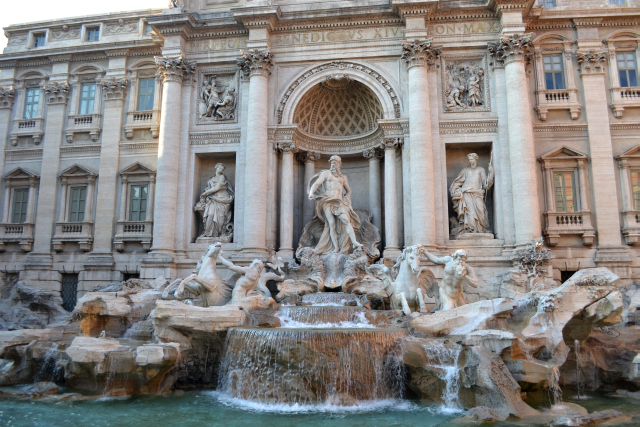

Rome is a heady mix of haunting ruins, awe-inspiring art and vibrant street life, Italy’s hot-blooded capital is one of the world’s most romantic and charismatic cities.It is the one city in the country that owes allegiance neither to the north or the south. It’s quite unlike any other city, and in terms of historic sights it outstrips everywhere else by some way.Rome is the biggest and arguably the most fascinating city in Italy. You could spend a month here and still only scratch the surface. It’s an ancient place, packed with the relics of over two thousand years of inhabitation, yet it’s so much more than an open-air museum. Rome’s culture, food, and people make up a modern, vibrant city that is deserving of all the visitors that travel there every year. As a historic centre, it is special enough; as a contemporary European capital, it is utterly unique.
